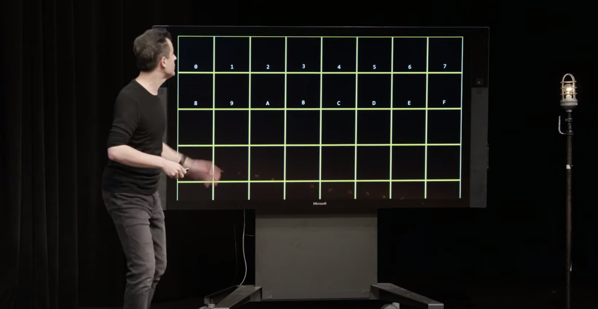
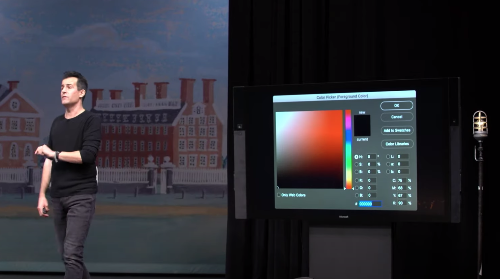
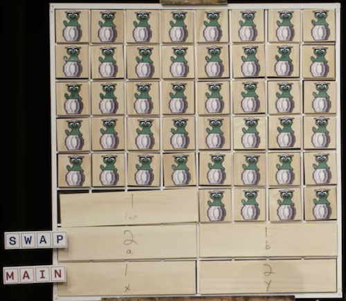

CS50 筆記：第四講 Memory
筆記前言
覺得這章是課程中我覺得蠻有趣的一章，除了學到了很多我以前不會的東西以外，這章的 problem set 很有趣，會帶著大家做一些基本的圖片處理（灰階、模糊、反轉、探測邊緣）。
記憶體就像下圖的格子一樣有一格又一格的空間，我們可以幫每個 byte 編號。通常在電腦科學裡面會用十六進制來編號。

十六進制
遇到 15 進位，十進制中的 10, 11, 12, 13, 14, 15 分別用 A, B, C, D, E, F 來表示。
十六進制的數數就會像底下這樣 00 01 02 03 04 05 06 07 08 09 0A (還沒進位！) 0B 0C 0D 0E 0F 10 …
所以兩位數的時候最多可以算到 FF (十進制的 255)
正好十六進制 FF 相當於二進制的 11111111（8bits!），每個十六進制的位數都可以表示 4 個 bits，正好可以用 2 個為表示一個 bytes
1111 1111 => FF
Hex Color Codes
常看到的網頁色碼 #f0f8ff, #db90b5，就是用分別用 1 個 byte來表示紅綠藍三種顏色的光的量，來表示一個顏色。

pointer
-
&address of: 這個變數在哪個記憶體位置 -
*: 這個記憶體位置存的是誰
string
一個 string 是一個 char 組成的陣列，之前學過透過 [] 來取得各個元素，例如 s[1], s[2], s[3]。因為陣列是連續的記憶體空間，每個元素會正好相鄰（char 佔一個 byte，因此每個元素的位置都隔一個 byte）
#include <stdio.h>
int main(void)
{
char *s = "HI!";
printf("%c\n", s[0]); // 例如 0x125
printf("%c\n", s[1]); // 0x126
printf("%c\n", s[2]); // 0x127
}
於是，除了 s[1] ，我們可以透過指標的方式 *(s+1) 來獲得下一個元素的內容
#include <stdio.h>
int main(void)
{
char *s = "HI!";
printf("%c\n", *s);
printf("%c\n", *(s+1));
printf("%c\n", *(s+2));
}
segmentation fault
當我們嘗試去操作不該碰的 memory ，程式會發生 segmentation fault。
compare & copy
比較兩個 *char 其實是在比較記憶體位置，即便 value 一樣也會被判斷成是不同的（str1 == str2 為 false）
valgrind
如果自行 malloc 要記得 free，忘記的話就會造成 memory leak，這些被忘記 free 的記憶體無法再被其他程式使用。
這種時候就可以使用 valgrind ，可以用來檢查程式是否有造成 memory leak 的工具，在 CS50 IDE 裡面預設有裝。
比方說當前目錄有個叫 memory 的執行檔，可以跑 valgrind ./memory 看他的分析
作用域
教授寫了一個 function swap 試圖交換兩個值的內容：
#include <stdio.h>
void swap(int a, int b);
int main(void)
{
int x = 1;
int y = 2;
printf("x is %i, y is %i\n", x, y);
swap(x, y);
printf("x is %i, y is %i\n", x, y);
}
void swap(int a, int b)
{
int tmp = a;
a = b;
b = tmp;
}
但最後印出來的結果會是
x is 1, y is 2
x is 1, y is 2
實際上執行會是，在主程式裡面的時候在 stack 裡放上 x 跟 y 的值。到 swap 裡時再放上 a 跟 b 的值，如下圖。 a 和 b 交換完以後，記憶體被釋放（a 跟 b 放的 1 跟 2 變成 garbage value），回到主程式。於是 x 跟 y 都保持原樣。

所以要在另一個 function 中交換 x, y，就必須透過指標。
#include <stdio.h>
void swap(int *a, int *b);
int main(void)
{
int x = 1;
int y = 2;
printf("x is %i, y is %i\n", x, y);
swap(&x, &y);
printf("x is %i, y is %i\n", x, y);
}
void swap(int *a, int *b)
{
int tmp = *a;
*a = *b;
*b = tmp;
}
scanf
之前都是用 cs50.h 的 get_string 等等，助教講師群包好的工具。實際上要自己獲得使用者的 output 的話，可以用 scanf。
get_string 方便的點是他把 linked list 之類的部分處理好了，可以接任意長度的用戶 input，但 scanf 就要看你自己拿來接的 char *的長度。
char * 再自己 malloc 和陣列可以做到差不多的效果，差別在於陣列用 memory 中的 stack，系統會幫你處理好不會 memory leak，malloc 則是用 heap，要記得 free 否則會造成 memory leak
fopen, fprintf, fclose
記憶體裡的內容會隨著電源關閉而消失，如果想要長久保存資料，就必須存在印碟裡，把資料寫入檔案中。
教授透過電話簿的範例，來示範檔案相關的操作
讀檔
FILE *file = fopen("phonebook.csv", "a");
寫入
fprintf(file, "%s,%s\n", name, number);
關閉檔案
fclose(file);
jpeg
可以用前幾個 bytes 就判斷一個檔案是否為 jpeg（被稱為 magic number）。因為這些檔案有特定的 standard，可以快速分辨它是什麼檔案
- 先用 fread 讀檔
- jpeg 前三個 bytes 會是: 0xff 0xd8 0xff
quiz
1) In your own words, what is a pointer?
我自己的答案：在 C 裡面的一種 data type，用來存放記憶體位置。在 C 裡面，我們可以透過指標去取出他指向的值（dereferencing）。
2) If s is of type string, in what sense is s a pointer?
我自己的答案：在 c 當中不存在 string 這個型別，實際上他是 char * （只是在 cs50.h 裡把它定義成叫做 string 的 type。 char * 代表他是個指標，指向的 value 應該被當成 char 來解讀。
3) If s and t are of type string, why can we not use s == t to check whether s and t contain the same characters?
我自己的答案：當 s 跟 t 都是 char *，在做 s == t 這件事情實際上的意思是在比較兩個記憶體位置，即便 t 指向的位置存的內容跟 s 指向的位置存的內容一樣，兩個記憶體位置有可能是不一樣的，所以無法用這種方式去比較 s 和 t 是否有相同的字串。